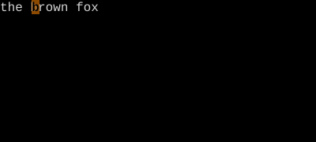

Vim is a tiny language: verbs (operators) compose with nouns (motions and text objects). Once you see the grammar, every key falls into place.
Almost every command in Vim follows one shape:
The full grammar
Key
Note
[count]
["reg]
operator
[count]
motion
Read it as a sentence: do this thing, optionally to register r, this many times, to this stretch of text. Concrete examples:
Command
Reads as
dw
Delete one word forward
3dw
Delete three words forward
d3w
Delete three words forward (counts multiply, but here one of them is 1)
ciw
Change the inner word the cursor is on
y$
Yank from cursor to end of line
>ip
Indent inner paragraph
"ayy
Yank this line into register a
gUiw
Uppercase the inner word
The verbs (operators)
Operator
Meaning
d
Delete (cut)
c
Change (delete then enter Insert)
y
Yank (copy)
>
Indent right
<
Indent left
=
Auto-indent / format
gU
Uppercase
gu
Lowercase
g~
Toggle case
gq
Format (line-wrap)
!
Filter through external command
The nouns (motions and text objects)
Anything that moves the cursor in Normal mode is a motion. After an operator, the same motion describes the range the operator acts on. So w alone moves the cursor a word forward; dw deletes the same span.
Noun kind
Examples
Word / WORD
w, b, e, W, B, E
Line
0, ^, $, _, g_
File
gg, G, {nG}
Find on line
f{char}, F{char}, t{char}, T{char}, ;, ,
Search
/pattern, ?pattern, n, N, *, #
Sentence / paragraph
(, ), {, {key:}}
Bracket match
%
Inner / around text object
iw, aw, i", a(, ip, at
The Vim Grammar in Action
Worked example — operator + motion = sentence
The grammar in three keystrokes.
Step 1 · Cursor on 'q'.
Normal mode. We will run d-w: the delete operator with the word motion.
Step 2 · dw · dw — 'quick ' deleted.

Operator d (verb) plus motion w (noun). Same grammar applies for any operator+motion pair.
Step 3 · lgUw · gUw — 'BROWN' uppercased.
Swap the operator for gU (uppercase), keep motion w. Free upgrade — every motion works with every operator.